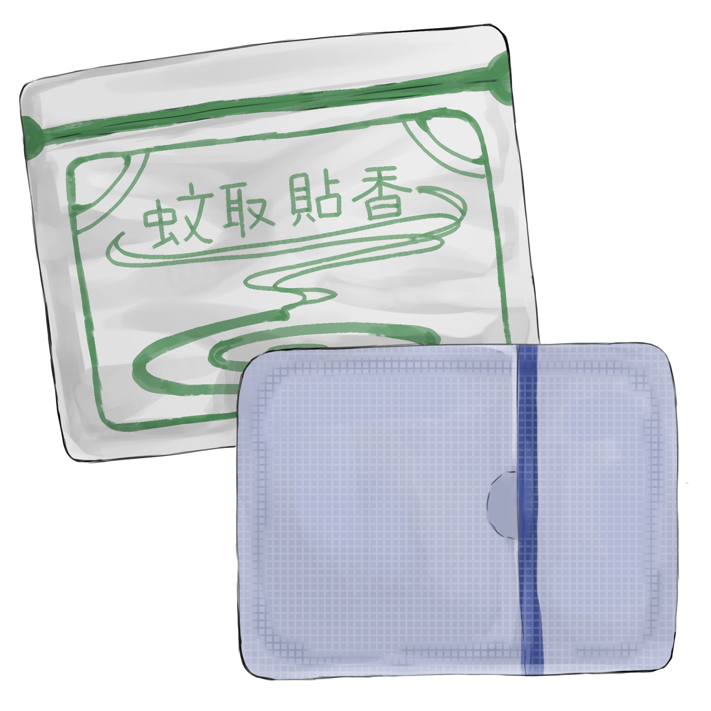

蚊取貼香

【効果・効能】
夏の夜の不快感を静かに鎮める清涼貼付薬です。
蚊取り線香の柔らかな香煙を模した成分が肌の熱を散らし、
頭部に貼ることで鎮静成分が広がり精神を整えます。
集中力が乱れやすい夏に、清涼感と落ち着きを与えて
心身を支える季節処方薬です。
【成分】
・蚊取り線香
・煙
・火
・蚊
・香料
【服用時点】
夏の夜、気が散って作業に集中できない時
【副作用】
長時間の使用で、まれに蚊に刺されたような刺激やかゆみを伴います
【生産地】
カナガワ
【製造会社名】
セガワ堂
製造者からひとこと
製造者は、毎年夏の琵琶湖で開催される鳥人間コンテストの
出場と優勝を目指すサークルに所属しているのですが、
コンテストが近づいてくると外での機体製作作業が増えていきます。
東京都立大学南大沢CPは自然豊かであることで有名ですが、
それに伴って虫が通常よりも巨大かつ沢山生息していることでも有名です。
そのため、作業場に蚊取り線香は必須条件です。
蚊取り線香に火をつけるだけで一瞬にして作業場環境の快適さが変わるほど、
個人的には夏の偉大な存在です。
時折作業で疲れた際は、蚊取り線香が緩やかに燃えていく様子や
細い煙が立ち上っていく様子をぼんやりと眺めています。